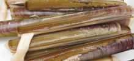

Rînchiz les manchots à seule fîn d'en haler l'sablion. Vèrsez assez dg'ieau bouoillante sus pouor les couvri, v'là tchi les tue et l's êcale. Épis i' faut l's èr'rinchi deux-trais fais à seule fîn d'asseûther qu'tout l'sablion a 'té lavé hors. S'tchiz les manchots atout un êssuie-tâsse, par exempl'ye, épis flieuthez-les d'vant les fricachi (mais n'faut pon les laîssi trop longtemps dans l'hielle pouor qu'i' né d'veingent pon trop dueûrs).
Viyiz étout: